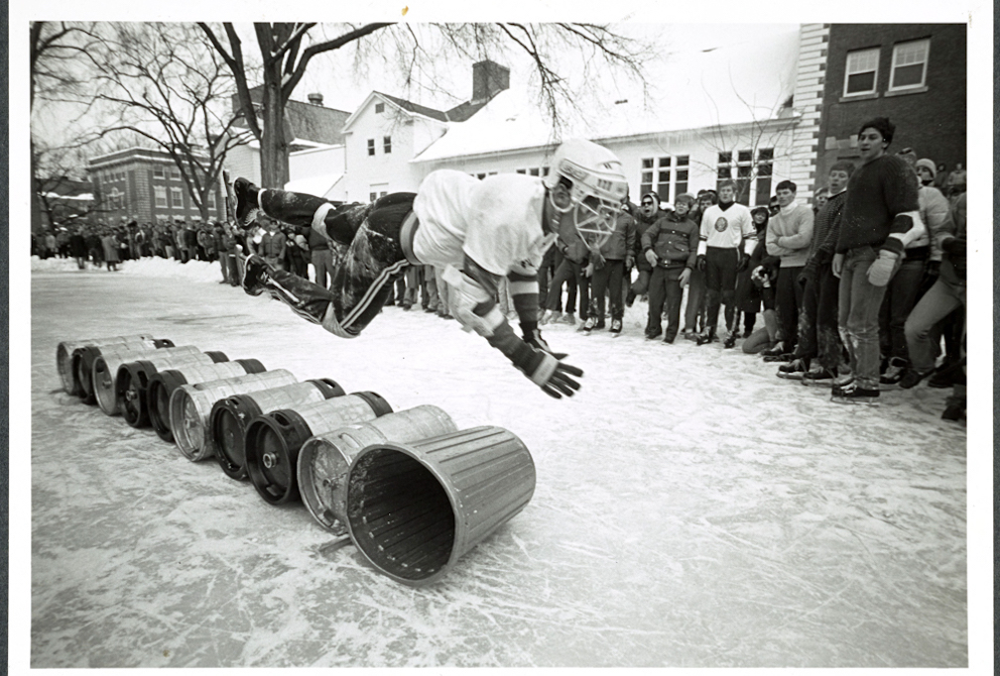

Young alumni reflect on their experiences after graduation
Eliza Jane Schaeffer '20
It’s odd that we prepare our young adults for the “real world” by sending them to schools like Dartmouth — schools that, arguably, have little in common with the real world...

A Dartmouth Family: Legacy students in Hanover
Rebecca Flowers '19
This is an example of what the article will be like
Students share perceptions of the new Good Samaritan policy
Emma Demers '20
This is an example of what the article will be like

Student artists raise the visiblity of art on campus
Betty Kim '20
This is an example of what the article will be like

The invisible injury: how concussions affect student lives
Samantha Hussey '20
This is an example of what the article will be like

Growing Pains
Lucy Li '19
This is an example of what the article will be like

Risk and the Undergraduate
Steven Chun '19
This is an example of what the article will be like

On the Old
Matt Brown '19
This is an example of what the article will be like
Through the Looking Glass: Becoming a Lone Pine
Allie Reichert '18
This is an example of what the article will be like

The Homecoming We Want
The Dartmouth Editorial Board
This is an example of what the article will be like

Editors' Note
Julia Huebner '20 and Cristian Cano '20
This is an example of what the article will be like